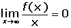

Representación de gráfica de funciones
Gráfica de una fución
gráfica (f) = {(x, f(x)) / x ∈ D}
Para representar una función tenemos estudiaremos los siguientes apartados:
Dominio de una función
D = {x ∈  / f (x)}
/ f (x)}
Dominio de la función polinómica
D =
Dominio de la función racional
El dominio es menos los valores que anulan al denominador.
Dominio de la función radical de índice impar
D =
Dominio de la función radical de índice par
El dominio está formado por todos los valores que hacen que el radicando sea mayor o igual que cero.
Dominio de la función logarítmica
El dominio está formado por todos los valores que hacen que el radicando sea mayor que cero.
Dominio de la función exponencial
D =
Dominio de la función seno
D = .
Dominio de la función coseno
D = .
Dominio de la función tangente
Dominio de la función cotangente

Dominio de la función secante
Dominio de la función cosecante
Dominio de operaciones con funciones

Simetría
Simetría respecto del eje de ordenadas
f(−x) = f(x)
Simetría respecto al origen
f(−x) = −f(x)
Periodicidad
Si f es periódica de período T, también lo es f(mx +n), y su período es T/m.
Puntos de corte con los ejes
Puntos de corte con el eje OX
Para hallar los puntos de corte con el eje de abscisas hacemos y = 0 y resolvemos la ecuación resultante.
Punto de corte con el ejes OY
Para hallar el punto de corte con el eje de ordenadas hacemos x = 0 y calculamos el valor de f(0).
Asíntotas
Asíntotas horizontales
Asíntotas verticales
Asíntotas oblicuas
Ramas parabólicas
Rama parabólica en la dirección del eje OY
Rama parabólica en la dirección del eje OX

Crecimiento y decrecimiento
Para hallar el crecimiento y decrecimiento seguiremos los siguientes pasos:
1 Derivar la función:
2 Obtener las raíces de la derivada primera, para ello hacemos: f'(x) = 0.
3 Formamos intervalos abiertos con los ceros (raíces) de la derivada primera y los puntos de discontinuidad (si los hubiese)
4 Tomamos un valor de cada intervalo, y hallamos el signo que tiene en la derivada primera.
5 Escribimos los intervalos de crecimiento y decrecimiento.
Máximos y mínimos relativos
Para hallar los extremos relativos seguiremos los siguientes pasos:
1 Hallamos la derivada primera y calculamos sus raíces.
2 Realizamos la 2ª derivada, y calculamos el signo que toman en ella las raíces de derivada primera y si:
f''(a) < 0 es un máximo relativo
f''(a) > 0 es un mínimo relativo
3 Calculamos la imagen (en la función) de los extremos relativos.
Si ya hemos estudiado el crecimiento y decrecimiento de una función habrá:
1 Un máximo en el punto, de la función, en la que esta pasa de creciente a decreciente.
2 Un mínimo en el punto, de la función, en la que esta pasa de decreciente a creciente.
Concavidad y convexidad
Para calcular los intervalos la concavidad y convexidad de una función seguiremos los siguientes pasos:
1 Hallamos la derivada segunda y calculamos sus raíces.
2 Formamos intervalos abiertos con los ceros (raíces) de la derivada segunda y los puntos de discontinuidad (si los hubiese).
3 Tomamos un valor de cada intervalo, y hallamos el signo que tiene en la derivada segunda.
4 Escribimos los intervalos.
Puntos de inflexión
Para hallar los puntos de inflexión, seguiremos los siguientes pasos:
1 Hallamos la derivada segunda y calculamos sus raíces.
2 Realizamos la derivada tercera, y calculamos el signo que toman en ella los ceros de derivada segunda y si:
f'''(x) ≠ 0 Tenemos un punto de inflexión.
3 Calculamos la imagen (en la función) del punto de inflexión.
Si ya hemos estudiado la concavidad y convexidad de una función habrá:
Un punto de inflexión en el punto, de la función, en los puntos en que esta pasa de cóncava a convexa o vicecersa.